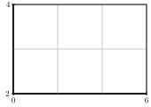
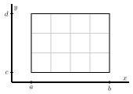
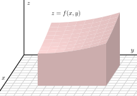
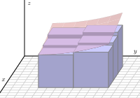
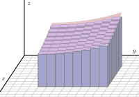
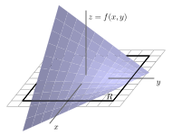
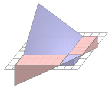
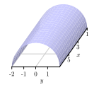

Section11.1Double Riemann Sums and Double Integrals over Rectangles
Motivating Questions
What is a double Riemann sum?
How is the double integral of a continuous function \(f = f(x,y)\) defined?
What are two things the double integral of a function can tell us?
In single-variable calculus, recall that we approximated the area under the graph of a positive function \(f\) on an interval \([a,b]\) by adding areas of rectangles whose heights are determined by the curve. The general process involved subdividing the interval \([a,b]\) into smaller subintervals, constructing rectangles on each of these smaller intervals to approximate the region under the curve on that subinterval, then summing the areas of these rectangles to approximate the area under the curve. We will extend this process in this section to its three-dimensional analogs, double Riemann sums and double integrals over rectangles.
Preview Activity11.1.1.
In this activity we introduce the concept of a double Riemann sum.
Review the concept of the Riemann sum from single-variable calculus. Then, explain how we define the definite integral \(\int_a^b f(x) \ dx\) of a continuous function of a single variable \(x\) on an interval \([a,b]\text{.}\) Include a sketch of a continuous function on an interval \([a,b]\) with appropriate labeling in order to illustrate your definition.
In our upcoming study of integral calculus for multivariable functions, we will first extend the idea of the single-variable definite integral to functions of two variables over rectangular domains. To do so, we will need to understand how to partition a rectangle into subrectangles. Let \(R\) be rectangular domain \(R = \{(x,y) : 0 \leq x \leq 6, 2 \leq y \leq 4\}\) (we can also represent this domain with the notation \([0,6] \times [2,4]\)), as pictured in Figure 11.1.1.

Figure11.1.1.Rectangular domain \(R\) with subrectangles.
To form a partition of the full rectangular region, \(R\text{,}\) we will partition both intervals \([0,6]\) and \([2,4]\text{;}\) in particular, we choose to partition the interval \([0,6]\) into three uniformly sized subintervals and the interval \([2,4]\) into two evenly sized subintervals as shown in Figure 11.1.1. In the following questions, we discuss how to identify the endpoints of each subinterval and the resulting subrectangles.
Let \(0=x_0 \lt x_1 \lt x_2 \lt x_3=6\) be the endpoints of the subintervals of \([0,6]\) after partitioning. What is the length \(\Delta x\) of each subinterval \([x_{i-1},x_i]\) for \(i\) from 1 to 3?
Explicitly identify \(x_0\text{,}\)\(x_1\text{,}\)\(x_2\text{,}\) and \(x_3\text{.}\) On Figure 11.1.1 or your own version of the diagram, label these endpoints.
Let \(2=y_0 \lt y_1 \lt y_2=4\) be the endpoints of the subintervals of \([2,4]\) after partitioning. What is the length \(\Delta y\) of each subinterval \([y_{j-1},y_j]\) for \(j\) from 1 to 2? Identify \(y_0\text{,}\)\(y_1\text{,}\) and \(y_2\) and label these endpoints on Figure 11.1.1.
Let \(R_{ij}\) denote the subrectangle \([x_{i-1},x_i] \times [y_{j-1},y_j]\text{.}\) Appropriately label each subrectangle in your drawing of Figure 11.1.1. How does the total number of subrectangles depend on the partitions of the intervals \([0,6]\) and \([2,4]\text{?}\)
What is area \(\Delta A\) of each subrectangle?
Subsection11.1.1Double Riemann Sums over Rectangles
For the definite integral in single-variable calculus, we considered a continuous function over a closed, bounded interval \([a,b]\text{.}\) In multivariable calculus, we will eventually develop the idea of a definite integral over a closed, bounded region (such as the interior of a circle). We begin with a simpler situation by thinking only about rectangular domains, and will address more complicated domains in Section 11.3.
Let \(f = f(x,y)\) be a continuous function defined on a rectangular domain \(R = \{(x,y) : a \leq x \leq b, c \leq y \leq d\}\text{.}\) As we saw in Preview Activity 11.1.1, the domain is a rectangle \(R\) and we want to partition \(R\) into subrectangles. We do this by partitioning each of the intervals \([a,b]\) and \([c,d]\) into subintervals and using those subintervals to create a partition of \(R\) into subrectangles. In the first activity, we address the quantities and notations we will use in order to define double Riemann sums and double integrals.
Activity11.1.2.
Let \(f(x,y) = 100 - x^2-y^2\) be defined on the rectangular domain \(R = [a,b] \times [c,d]\text{.}\) Partition the interval \([a,b]\) into four uniformly sized subintervals and the interval \([c,d]\) into three evenly sized subintervals as shown in Figure 11.1.2. As we did in Preview Activity 11.1.1, we will need a method for identifying the endpoints of each subinterval and the resulting subrectangles.

Figure11.1.2.Rectangular domain with subrectangles.
Let \(a=x_0 \lt x_1 \lt x_2 \lt x_3 \lt x_4 =b\) be the endpoints of the subintervals of \([a,b]\) after partitioning. Label these endpoints in Figure 11.1.2.
What is the length \(\Delta x\) of each subinterval \([x_{i-1},x_i]\text{?}\) Your answer should be in terms of \(a\) and \(b\text{.}\)
Let \(c=y_0 \lt y_1 \lt y_2 \lt y_3 =d\) be the endpoints of the subintervals of \([c,d]\) after partitioning. Label these endpoints in Figure 11.1.2.
What is the length \(\Delta y\) of each subinterval \([y_{j-1},y_j]\text{?}\) Your answer should be in terms of \(c\) and \(d\text{.}\)
The partitions of the intervals \([a,b]\) and \([c,d]\) partition the rectangle \(R\) into subrectangles. How many subrectangles are there?
Let \(R_{ij}\) denote the subrectangle \([x_{i-1},x_i] \times [y_{j-1},y_j]\text{.}\) Label each subrectangle in Figure 11.1.2.
What is area \(\Delta A\) of each subrectangle?
Now let \([a,b] = [0,8]\) and \([c,d] = [2,6]\text{.}\) Let \((x_{11}^*,y_{11}^*)\) be the point in the upper right corner of the subrectangle \(R_{11}\text{.}\) Identify and correctly label this point in Figure 11.1.2. Calculate the product
\begin{equation*}
f(x_{11}^*,y_{11}^*) \Delta A.
\end{equation*}
Explain, geometrically, what this product represents.
For each \(i\) and \(j\text{,}\) choose a point \((x_{ij}^*,y_{ij}^*)\) in the subrectangle \(R_{i,j}\text{.}\) Identify and correctly label these points in Figure 11.1.2. Explain what the product
\begin{equation*}
f(x_{ij}^*,y_{ij}^*) \Delta A
\end{equation*}
represents.
If we were to add all the values \(f(x_{ij}^*,y_{ij}^*) \Delta A\) for each \(i\) and \(j\text{,}\) what does the resulting number approximate about the surface defined by \(f\) on the domain \(R\text{?}\) (You don't actually need to add these values.)
Write a double sum using summation notation that expresses the arbitrary sum from part (\(j\)).
Subsection11.1.2Double Riemann Sums and Double Integrals
Now we use the process from the most recent activity to formally define double Riemann sums and double integrals.
Definition11.1.3.
Let \(f\) be a continuous function on a rectangle \(R = \{(x,y) : a \leq x \leq b, c \leq y \leq d\}\text{.}\) A double Riemann sum for \(f\) over \(R\) is created as follows.
-.
Partition the interval \([a, b]\) into \(m\) subintervals of equal length \(\Delta x = \frac{b-a}{m}\text{.}\) Let \(x_0\text{,}\)\(x_1\text{,}\)\(\ldots\text{,}\)\(x_m\) be the endpoints of these subintervals, where \(a = x_0\lt x_1\lt x_2 \lt \cdots \lt x_m = b\text{.}\)
-.
Partition the interval \([c, d]\) into \(n\) subintervals of equal length \(\Delta y = \frac{d-c}{n}\text{.}\) Let \(y_0\text{,}\)\(y_1\text{,}\)\(\ldots\text{,}\)\(y_n\) be the endpoints of these subintervals, where \(c = y_0\lt y_1\lt y_2 \lt \cdots \lt y_n = d\text{.}\)
-.
These two partitions create a partition of the rectangle \(R\) into \(mn\) subrectangles \(R_{ij}\) with opposite vertices \((x_{i-1},y_{j-1})\) and \((x_i, y_j)\) for \(i\) between \(1\) and \(m\) and \(j\) between \(1\) and \(n\text{.}\) These rectangles all have equal area \(\Delta A = \Delta x \cdot \Delta y\text{.}\)
Choose a point \((x_{ij}^*, y_{ij}^*)\) in each rectangle \(R_{ij}\text{.}\) Then, a double Riemann sum for \(f\) over \(R\) is given by
\begin{equation*}
\sum_{j=1}^n \sum_{i=1}^m f(x_{ij}^*, y_{ij}^*) \cdot \Delta A.
\end{equation*}
If \(f(x,y) \geq 0\) on the rectangle \(R\text{,}\) we may ask to find the volume of the solid bounded above by \(f\) over \(R\text{,}\) as illustrated on the left of Figure 11.1.4. This volume is approximated by a Riemann sum, which sums the volumes of the rectangular boxes shown on the right of Figure 11.1.4.


Figure11.1.4.The volume under a graph approximated by a Riemann Sum.
As we let the number of subrectangles increase without bound (in other words, as both \(m\) and \(n\) in a double Riemann sum go to infinity), as illustrated in Figure 11.1.5, the sum of the volumes of the rectangular boxes approaches the volume of the solid bounded above by \(f\) over \(R\text{.}\) The value of this limit, provided it exists, is the double integral.

Figure11.1.5.Finding better approximations by using smaller subrectangles.
Definition11.1.6.
Let \(R\) be a rectangular region in the \(xy\)-plane and \(f\) a continuous function over \(R\text{.}\) With terms defined as in a double Riemann sum, the double integral of \(f\) over \(R\) is
\begin{equation*}
\iint_R f(x,y) \, dA = \lim_{m,n \to \infty} \sum_{j=1}^n \sum_{i=1}^m f(x_{ij}^*, y_{ij}^*) \cdot \Delta A.
\end{equation*}
Some textbooks use the notation \(\int_R f(x,y) \, dA\) for a double integral. You will see this in some of the WeBWorK problems.
Subsection11.1.3Interpretation of Double Riemann Sums and Double integrals.
At the moment, there are two ways we can interpret the value of the double integral.
Suppose that \(f(x,y)\) assumes both positive and negatives values on the rectangle \(R\text{,}\) as shown on the left of Figure 11.1.7. When constructing a Riemann sum, for each \(i\) and \(j\text{,}\) the product \(f(x_{ij}^*, y_{ij}^*) \cdot \Delta A\) can be interpreted as a “signed” volume of a box with base area \(\Delta A\) and “signed” height \(f(x_{ij}^*, y_{ij}^*)\text{.}\) Since \(f\) can have negative values, this “height” could be negative. The sum
\begin{equation*}
\sum_{j=1}^n \sum_{i=1}^m f(x_{ij}^*, y_{ij}^*) \cdot \Delta A
\end{equation*}
can then be interpreted as a sum of “signed” volumes of boxes, with a negative sign attached to those boxes whose heights are below the \(xy\)-plane.


Figure11.1.7.The integral measures signed volume. We can then realize the double integral \(\iint_R
f(x,y) \, dA\) as a difference in volumes: \(\iint_R f(x,y) \, dA\) tells us the volume of the solids the graph of \(f\) bounds above the \(xy\)-plane over the rectangle \(R\) minus the volume of the solids the graph of \(f\) bounds below the \(xy\)-plane under the rectangle \(R\text{.}\) This is shown on the right of Figure 11.1.7.
The average of the finitely many \(mn\) values \(f(x_{ij}^*, y_{ij}^*)\) that we take in a double Riemann sum is given by
If we take the limit as \(m\) and \(n\) go to infinity, we obtain what we define as the average value of \(f\) over the region \(R\text{,}\) which is connected to the value of the double integral. First, to view \(\text{ Avg } _{mn}\) as a double Riemann sum, note that
\begin{equation*}
\Delta x = \frac{b-a}{m} \ \ \ \ \ \text{ and } \ \ \ \ \ \Delta y = \frac{d-c}{n}.
\end{equation*}
where \(A(R)\) denotes the area of the rectangle \(R\text{.}\) Then, the average value of the function \(f\) over \(R\text{,}\)\(f_{\operatorname{AVG}(R)}\text{,}\) is given by
Therefore, the double integral of \(f\) over \(R\) divided by the area of \(R\) gives us the average value of the function \(f\) on \(R\text{.}\) Finally, if \(f(x, y) \geq 0\) on \(R\text{,}\) we can interpret this average value of \(f\) on \(R\) as the height of the box with base \(R\) that has the same volume as the volume of the surface defined by \(f\) over \(R\text{.}\)
Activity11.1.3.
Let \(f(x,y) = x+2y\) and let \(R = [0,2] \times [1,3]\text{.}\)
Draw a picture of \(R\text{.}\) Partition \([0,2]\) into 2 subintervals of equal length and the interval \([1,3]\) into two subintervals of equal length. Draw these partitions on your picture of \(R\) and label the resulting subrectangles using the labeling scheme we established in the definition of a double Riemann sum.
For each \(i\) and \(j\text{,}\) let \((x_{ij}^*, y_{ij}^*)\) be the midpoint of the rectangle \(R_{ij}\text{.}\) Identify the coordinates of each \((x_{ij}^*, y_{ij}^*)\text{.}\) Draw these points on your picture of \(R\text{.}\)
Calculate the Riemann sum
\begin{equation*}
\sum_{j=1}^n \sum_{i=1}^m f(x_{ij}^*, y_{ij}^*) \cdot \Delta A
\end{equation*}
using the partitions we have described. If we let \((x_{ij}^*, y_{ij}^*)\) be the midpoint of the rectangle \(R_{ij}\) for each \(i\) and \(j\text{,}\) then the resulting Riemann sum is called a midpoint sum.
Give two interpretations for the meaning of the sum you just calculated.
Activity11.1.4.
Let \(f(x,y) = \sqrt{4-y^2}\) on the rectangular domain \(R = [1,7] \times [-2,2]\text{.}\) Partition \([1,7]\) into 3 equal length subintervals and \([-2,2]\) into 2 equal length subintervals. A table of values of \(f\) at some points in \(R\) is given in Table 11.1.8, and a graph of \(f\) with the indicated partitions is shown in Figure 11.1.9.
Table11.1.8.Table of values of \(f(x,y) = \sqrt{4-y^2}\text{.}\)
\(-2\)
\(-1\)
\(0\)
\(1\)
\(2\)
\(1\)
\(0\)
\(\sqrt{3}\)
\(2\)
\(\sqrt{3}\)
\(0\)
\(2\)
\(0\)
\(\sqrt{3}\)
\(2\)
\(\sqrt{3}\)
\(0\)
\(3\)
\(0\)
\(\sqrt{3}\)
\(2\)
\(\sqrt{3}\)
\(0\)
\(4\)
\(0\)
\(\sqrt{3}\)
\(2\)
\(\sqrt{3}\)
\(0\)
\(5\)
\(0\)
\(\sqrt{3}\)
\(2\)
\(\sqrt{3}\)
\(0\)
\(6\)
\(0\)
\(\sqrt{3}\)
\(2\)
\(\sqrt{3}\)
\(0\)
\(7\)
\(0\)
\(\sqrt{3}\)
\(2\)
\(\sqrt{3}\)
\(0\)
Figure11.1.9.Graph of \(f(x,y) = \sqrt{4-y^2}\) on \(R\text{.}\)
Sketch the region \(R\) in the plane using the values in Table 11.1.8 as the partitions.
Calculate the double Riemann sum using the given partition of \(R\) and the values of \(f\) in the upper right corner of each subrectangle.
Use geometry to calculate the exact value of \(\iint_R f(x,y) \, dA\) and compare it to your approximation. Describe one way we could obtain a better approximation using the given data.
We conclude this section with a list of properties of double integrals. Since similar properties are satisfied by single-variable integrals and the arguments for double integrals are essentially the same, we omit their justification.
Properties of Double Integrals.
Let \(f\) and \(g\) be continuous functions on a rectangle \(R = \{(x,y) : a \leq x \leq b, c \leq y \leq d\}\text{,}\) and let \(k\) be a constant. Then
\(\iint_R (f(x,y) + g(x,y)) \, dA = \iint_R f(x,y) \, dA + \iint_R g(x,y) \, dA\text{.}\)
\(\iint_R kf(x,y) \, dA = k \iint_R f(x,y) \, dA\text{.}\)
If \(f(x,y) \geq g(x,y)\) on \(R\text{,}\) then \(\iint_R f(x,y) \, dA \geq \iint_R g(x,y) \, dA\text{.}\)
Subsection11.1.4Summary
Let \(f\) be a continuous function on a rectangle \(R = \{(x,y) : a \leq x \leq b, c \leq y \leq d\}\text{.}\) The double Riemann sum for \(f\) over \(R\) is created as follows.
-.
Partition the interval \([a, b]\) into \(m\) subintervals of equal length \(\Delta x = \frac{b-a}{m}\text{.}\) Let \(x_0\text{,}\)\(x_1\text{,}\)\(\ldots\text{,}\)\(x_m\) be the endpoints of these subintervals, where \(a = x_0\lt x_1\lt x_2 \lt \cdots \lt x_m = b\text{.}\)
-.
Partition the interval \([c, d]\) into \(n\) subintervals of equal length \(\Delta y = \frac{d-c}{n}\text{.}\) Let \(y_0\text{,}\)\(y_1\text{,}\)\(\ldots\text{,}\)\(y_n\) be the endpoints of these subintervals, where \(c = y_0\lt y_1\lt y_2 \lt \cdots \lt y_n = d\text{.}\)
-.
These two partitions create a partition of the rectangle \(R\) into \(mn\) subrectangles \(R_{ij}\) with opposite vertices \((x_{i-1},y_{j-1})\) and \((x_i, y_j)\) for \(i\) between \(1\) and \(m\) and \(j\) between \(1\) and \(n\text{.}\) These rectangles all have equal area \(\Delta A = \Delta x \cdot \Delta y\text{.}\)
-.
Choose a point \((x_{ij}^*, y_{ij}^*)\) in each rectangle \(R_{ij}\text{.}\) Then a double Riemann sum for \(f\) over \(R\) is given by
\begin{equation*}
\sum_{j=1}^n \sum_{i=1}^m f(x_{ij}^*, y_{ij}^*) \cdot \Delta A.
\end{equation*}
With terms defined as in the Double Riemann Sum, the double integral of \(f\) over \(R\) is
\begin{equation*}
\iint_R f(x,y) \, dA = \lim_{m,n \to \infty} \sum_{j=1}^n \sum_{i=1}^m f(x_{ij}^*, y_{ij}^*) \cdot \Delta A.
\end{equation*}
Two interpretations of the double integral \(\iint_R f(x,y) \, dA\) are:
-.
The volume of the solids the graph of \(f\) bounds above the \(xy\)-plane over the rectangle \(R\) minus the volume of the solids the graph of \(f\) bounds below the \(xy\)-plane under the rectangle \(R\text{;}\)
-.
Dividing the double integral of \(f\) over \(R\) by the area of \(R\) gives us the average value of the function \(f\) on \(R\text{.}\) If \(f(x, y) \geq 0\) on \(R\text{,}\) we can interpret this average value of \(f\) on \(R\) as the height of the box with base \(R\) that has the same volume as the volume of the surface defined by \(f\) over \(R\text{.}\)
Exercises11.1.5Exercises
1.
Suppose \(f(x,y) = 1-x^{2}-y^{2}\) and \(R\) is the rectangle with vertices (0,0), (6,0), (6,4), (0,4). In each part, estimate \(\displaystyle \iint\limits_R f(x,y) \, dA\) using Riemann sums. For underestimates or overestimates, consistently use either the lower left-hand corner or the upper right-hand corner of each rectangle in a subdivision, as appropriate.
(a) Without subdividing \(R\text{,}\)
Underestimate =
Overestimate =
(b) By partitioning \(R\) into four equal-sized rectangles.
Underestimate =
Overestimate =
2.
Consider the solid that lies above the square (in the \(xy\)-plane) \(R = [0, 1] \times [0, 1]\text{,}\) and below the elliptic paraboloid \(z = 25 - x^2+ xy - 4 y^2\text{.}\)
Estimate the volume by dividing \(R\) into 9 equal squares and choosing the sample points to lie in the midpoints of each square.
3.
Let \(R\) be the rectangle with vertices \((0,0)\text{,}\)\((4,0)\text{,}\)\((4,4)\text{,}\) and \((0,4)\) and let \(f(x,y) = \sqrt{xy}\text{.}\)
(a) Find reasonable upper and lower bounds for \(\int_{R}f\,dA\) without subdividing \(R\text{.}\)
upper bound =
lower bound =
(b) Estimate \(\int_{R}f\,dA\) three ways: by partitioning \(R\) into four subrectangles and evaluating \(f\) at its maximum and minimum values on each subrectangle, and then by considering the average of these (over and under) estimates.
overestimate: \(\int_{R}f\,dA \approx\)
underestimate: \(\int_{R}f\,dA \approx\)
average: \(\int_{R}f\,dA \approx\)
4.
Using Riemann sums with four subdivisions in each direction, find upper and lower bounds for the volume under the graph of \(f(x,y) = 4+xy\) above the rectangle \(R\) with \(0\le x\le 2,\quad 0\le y \le 3\text{.}\)
upper bound =
lower bound =
5.
Consider the solid that lies above the square (in the xy-plane) \(R = [0, 2] \times [0, 2]\text{,}\)
and below the elliptic paraboloid \(z = 49 - x^{2} - 4y^2\text{.}\)
(A) Estimate the volume by dividing R into 4 equal squares and choosing the sample points to lie in the lower left hand corners.
(B) Estimate the volume by dividing R into 4 equal squares and choosing the sample points to lie in the upper right hand corners..
(C) What is the average of the two answers from (A) and (B)?
6.
The figure below shows contours of \(g(x,y)\) on the region \(R\text{,}\) with \(7 \le x\le 13\) and \(4 \le y\le 10\text{.}\)
Using \(\Delta x = \Delta y =2\text{,}\) find an overestimate and an underestimate for \(\int_R g(x,y)\, dA\text{.}\)
Overestimate =
Underestimate =
7.
The figure below shows the distribution of temperature, in degrees C, in a 5 meter by 5 meter heated room.
Using Riemann sums, estimate the average temperature in the room.
average temperature =
8.
Values of \(f(x,y)\) are given in the table below. Let \(R\) be the rectangle \(1 \leq x \leq 1.6, 2 \leq y \leq 3.2\text{.}\) Find a Riemann sum which is a reasonable estimate for \(\int_R f(x,y) \, da\) with \(\Delta x = 0.2\) and \(\Delta y = 0.4\text{.}\) Note that the values given in the table correspond to midpoints.
Values of \(f(x,y)\) are shown in the table below.
\(x = 3\)
\(x = 3.2\)
\(x = 3.4\)
\(y = 4\)
7
9
12
\(y = 4.4\)
5
7
9
\(y = 4.8\)
3
5
18
Let \(R\) be the rectangle \(3 \leq x \leq 3.4\text{,}\)\(4 \leq y \leq 4.8\text{.}\) Find the values of Riemann sums which are reasonable over- and under-estimates for \(\int_R f(x,y) \,dA\) with \(\Delta x=0.2\) and \(\Delta y=0.4\text{.}\)
over-estimate:
under-estimate:
10.
The temperature at any point on a metal plate in the \(xy\) plane is given by \(T(x,y) = 100-4x^2 - y^2\text{,}\) where \(x\) and \(y\) are measured in inches and \(T\) in degrees Celsius. Consider the portion of the plate that lies on the rectangular region \(R = [1,5] \times [3,6]\text{.}\)
Estimate the value of \(\iint_R T(x,y) \, dA\) by using a double Riemann sum with two subintervals in each direction and choosing \((x_i^*, y_j^*)\) to be the point that lies in the upper right corner of each subrectangle.
Determine the area of the rectangle \(R\text{.}\)
Estimate the average temperature, \(T_{\operatorname{AVG}(R)}\text{,}\) over the region \(R\text{.}\)
Do you think your estimate in (c) is an over- or under-estimate of the true temperature? Why?
11.
Let \(f\) be a function of independent variables \(x\) and \(y\) that is increasing in both the positive \(x\) and \(y\) directions on a rectangular domain \(R\text{.}\) For each of the following situations, determine if the double Riemann sum of \(f\) over \(R\) is an overestimate or underestimate of the double integral \(\iint_R f(x,y) \, dA\text{,}\) or if it impossible to determine definitively. Provide justification for your responses.
The double Riemann sum of \(f\) over \(R\) where \(f\) is evaluated at the lower left point of each subrectangle.
The double Riemann sum of \(f\) over \(R\) where \(f\) is evaluated at the upper right point of each subrectangle.
The double Riemann sum of \(f\) over \(R\) where \(f\) is evaluated at the midpoint of each subrectangle.
The double Riemann sum of \(f\) over \(R\) where \(f\) is evaluated at the lower right point of each subrectangle.
12.
The wind chill, as frequently reported, is a measure of how cold it feels outside when the wind is blowing. In Table 11.1.10, the wind chill \(w=w(v,T)\text{,}\) measured in degrees Fahrenheit, is a function of the wind speed \(v\text{,}\) measured in miles per hour, and the ambient air temperature \(T\text{,}\) also measured in degrees Fahrenheit. Approximate the average wind chill on the rectangle \([5,35] \times [-20,20]\) using 3 subintervals in the \(v\) direction, 4 subintervals in the \(T\) direction, and the point in the lower left corner in each subrectangle.
Table11.1.10.Wind chill as a function of wind speed and temperature.
\(v \backslash T\)
\(-20\)
\(-15\)
\(-10\)
\(-5\)
\(0\)
\(5\)
\(10\)
\(15\)
\(20\)
\(5\)
\(-34\)
\(-28\)
\(-22\)
\(-16\)
\(-11\)
\(-5\)
\(1\)
\(7\)
\(13\)
\(10\)
\(-41\)
\(-35\)
\(-28\)
\(-22\)
\(-16\)
\(-10\)
\(-4\)
\(3\)
\(9\)
\(15\)
\(-45\)
\(-39\)
\(-32\)
\(-26\)
\(-19\)
\(-13\)
\(-7\)
\(0\)
\(6\)
\(20\)
\(-48\)
\(-42\)
\(-35\)
\(-29\)
\(-22\)
\(-15\)
\(-9\)
\(-2\)
\(4\)
\(25\)
\(-51\)
\(-44\)
\(-37\)
\(-31\)
\(-24\)
\(-17\)
\(-11\)
\(-4\)
\(3\)
\(30\)
\(-53\)
\(-46\)
\(-39\)
\(-33\)
\(-26\)
\(-19\)
\(-12\)
\(-5\)
\(1\)
\(35\)
\(-55\)
\(-48\)
\(-41\)
\(-34\)
\(-27\)
\(-21\)
\(-14\)
\(-7\)
\(0\)
13.
Consider the box with a sloped top that is given by the following description: the base is the rectangle \(R = [0,4] \times [0,3]\text{,}\) while the top is given by the plane \(z = p(x,y) = 20 - 2x - 3y\text{.}\)
Estimate the value of \(\iint_R p(x,y) \, dA\) by using a double Riemann sum with four subintervals in the \(x\) direction and three subintervals in the \(y\) direction, and choosing \((x_i^*, y_j^*)\) to be the point that is the midpoint of each subrectangle.
What important quantity does your double Riemann sum in (a) estimate?
Suppose it can be determined that \(\iint_R p(x,y) \, dA = 138\text{.}\) What is the exact average value of \(p\) over \(R\text{?}\)
If you wanted to build a rectangular box (with the same base) that has the same volume as the box with the sloped top described here, how tall would the rectangular box have to be?